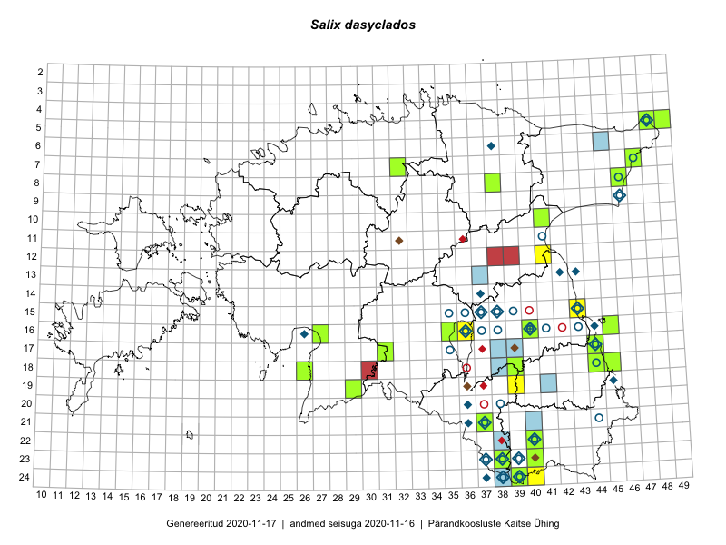

Salix dasyclados
Uuendatud: 2016-12-07
Kaardile koondatud taksonid: Salix dasyclados Wimm.

Kaart põhineb 16 kirjel, neist vaatlusi 13 ja eksemplare 3. Taksonit on leitud 11 ruudust.
| Ruut | Vaatleja(d) | Vaatlusaeg | Kirje tüüp | Viide andmebaasikirjele |
|---|---|---|---|---|
| 18-45 | Peedu Saar | 2015-07-04 | punkt | vaata PlutoFis |
| 18-45 | Peedu Saar | 2015-07-04 | ruut/ala | vaata PlutoFis |
| 08-44 | Toomas Kukk, Peedu Saar | 2014-07-09 | ruut/ala | vaata PlutoFis |
| Malle Leht | 2015-07-08 | ruut/ala | vaata PlutoFis | |
| 13-40 | Eeva-Maria Jeletsky, Tarmo Niitla | 2015-04-26 | ruut/ala | vaata PlutoFis |
| 24-37 | Eeva-Maria Jeletsky, Tarmo Niitla | 2015-07-16 | ruut/ala | vaata PlutoFis |
| 24-40 | Eeva-Maria Jeletsky, Tarmo Niitla | 2015-07-25 | ruut/ala | vaata PlutoFis |
| 18-45 | Toomas Kukk, Tiit Hallikma | 2016-06-17 | ruut/ala | vaata PlutoFis |
| 23-38 | Rein Kalamees, Eerik Leibak | 2016-06-16 | ruut/ala | vaata PlutoFis |
| 21-37 | Silvia Pihu | 2015-06-28 | ruut/ala | vaata PlutoFis |
| 21-37 | Silvia Pihu | 2015-06-28 | punkt | vaata PlutoFis |
| 18-44 | Liina Oja, Maret Gerz | 2016-07-17 | punkt | vaata PlutoFis |
| 24-39 | Liina Oja, Maret Gerz | 2016-06-14 | punkt | vaata PlutoFis |
| 18-44 | Peedu Saar | 2015-07-04 | eksemplar | vaata PlutoFis |
| 07-47 | Peedu Saar, Sander Laherand | 2015-05-31 | eksemplar | vaata PlutoFis |
| 17-40 | Peedu Saar, Thea Kull | 2015-06-19 | eksemplar | vaata PlutoFis |